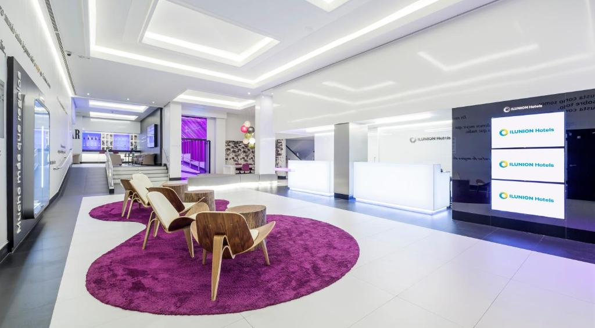

<body>

	<!-- Container con toda la información -->

	<div class="container mt-5">
		<h1 class="text-center mb-5">Mis Favoritos</h1>

		<div class="row row-cols-1 row-cols-md-2 row-cols-lg-3 g-4">


			<div class="row" data-ng-if="searchVM.propertiesFavorites.length===0">
				<div class="alert alert-info" role="alert">No tienes ningún
					favorito guardado.</div>
			</div>

			<div class="col"
				data-ng-repeat="property in searchVM.propertiesFavourites">
				<div class="card h-100">
					
					<div class="card-body">
						<h5 class="card-title">{{property.city}}</h5>
						<h6 class="card-subtitle mb-3">{{property.name}}</h6>
						<p class="card-text">{{property.description}}</p>
						<p class="card-text">{{property.address}}</p>


						<button class="btn btn-danger mt-3"
							data-ng-click="searchVM.functions.removeFavourite(property.id)">
							<i class="far fa-heart"></i> Eliminar de favoritos
						</button>
						

					</div>
				</div>
			</div>
		</div>
	</div>

	<!-- Footer -->
	<footer class="text-center text-white mt-5"
		style="background-color: #f1f1f1;">
		<div class="container pt-4">
			<section class="mb-4">
				<a class="btn btn-link btn-floating btn-lg text-dark m-1"
					href="https://github.com/Null-Cat0" role="button"
					data-mdb-ripple-color="dark"><i class="fa-brands fa-github"></i>
				</a>
			</section>
		</div>
		<div class="text-center text-dark p-3"
			style="background-color: rgba(0, 0, 0, 0.2);">© 2024 Asier
			Serrano Martín - Programación en Internet - Universidad de
			Extremadura</div>
	</footer>
</body>